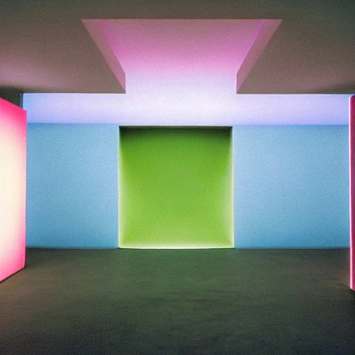

CF—DS—002 / 2022
Rooms Without Occupants
Openings without a clear destination.
Two empty spaces organized by colored walls, apertures, and displaced planes of light. The absence of occupants leaves the geometry unresolved.



CF—DS—002 / 2022
Openings without a clear destination.
Two empty spaces organized by colored walls, apertures, and displaced planes of light. The absence of occupants leaves the geometry unresolved.
